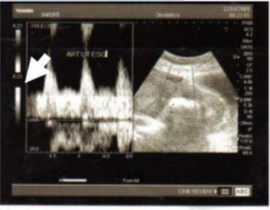
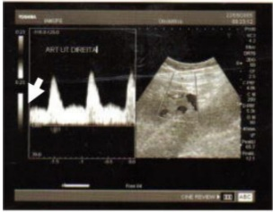
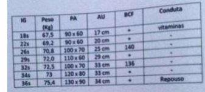

Questão 1 · Tratamento f armacológico · 4000128430O gluconato de cálcio ou cloreto de cálcio 1g por via intravenosa é a medicação administrada em gestantes ou em puérperas com pré-eclâmpsia grave em uso de sulfato de magnésio. Em que condição está indicado o uso dessa medicação?
A Recidiva da convulsão.
B Ausência de reflexo patelar.
C Pico pressórico.
D Oligúria.
E Escotomas e cefaleia.
Questão 2 · Conduta · Préeclâmpsia com sinais de gravidade · 4000128429Paciente, 15 anos, G1P0A0, com 32 semanas de gestação, com queixa de cefaleia, epigastralgia e escotomas. Exame físico: PA = 140X100mmHg; altura de fundo uterino de 32 cm, Reflexos patelares e pré-cubitais exaltados. A conduta é:
A Internação, corticoterapia e cesárea imediata.
B Internação, corticoterapia e sulfato de magnésio.
C Anti-hipertensivo, corticoterapia e acompanhamento ambulatorial.
D Internação, corticoterapia e indução com misoprostol.
E Internação, solicitação de rotina laboratorial, anti-hipertensivo.
Questão 3 · Criterios diagnósticos da préeclampsia · 4000120352Gestante, 38 semanas, desejosa de parto normal, observou há 1 dia cefaleia, edema de membros inferiores e aumento súbito da pressão arterial sistêmica, que chegou a 140 90 mmHg na admissão da maternidade. Em relação ao quadro clínico e a via de parto, recomenda-se:
A Prescrição de anti-hipertensivos e parto instrumentalizado (fórceps ou vácuo) para diminuir os riscos de acidente vascular cerebral, com 39 semanas de gestação.
B Parto cesárea de urgência com anestesia geral.
C Prescrição de anti-hipertensivos e parto cesárea programado com 39 semanas.
D Aguardar o trabalho de parto fisiológico, fazendo exames de vitalidade fetal a cada 72 horas, e conduzir o parto vaginal em tempo oportuno.
E Parto via vaginal, preferencialmente, não havendo contraindicação para procedimentos de maturação cervical imediata.
Questão 4 · PréEclâmpsia · 4000119309Em gestantes com risco aumentado de pré-eclâmpsia, a única droga com evidência convincente de redução desse risco é
A hidroclorotiazída
B alfametildopa
C ácido acetilsalicílico
D prazosin
E clopidogrel
Questão 5 · PréEclâmpsia · 4000115124Com relação aos fenômenos hipertensivos na gravidez, assinale a alternativa CORRETA:
A A suplementação com cálcio (carbonato de cálcio) e o uso de pequenas doses diárias de aspirina para grupos de risco são as únicas alternativas que mostraram algum grau de efetividade na profilaxia da pré-eclâmpsia.
B São considerados fatores de risco para o desenvolvimento de pré-eclâmpsia:tabagismo, gestação única, irmã, mãe ou avó primigestas tardias, gestação não programada e aborto anterior do mesmo pai.
C A droga de escolha para prevenção da eclâmpsia é a hidralazina, único fármaco com efeitos preventivos comprovados em relação às convulsões eclâmpticas e com baixo risco para determinar hipotensão.
D Na pré-eclâmpsia, o tratamento definitivo da enfermidade será o nascimento.Portanto, toda gestante com feto perto do termo (idade gestacional ≥ 36 sem.) deverá ser submetida à interrupção da gravidez.
Questão 6 · Conduta · 4000109191Primigesta, 27 anos de idade, vem para iniciar pré-natal. É hipertensa crônica diagnosticada aos 22 anos de idade, fez uso de enalapril por 3 anos e, após mudança de hábitos de vida, suspendeu o tratamento medicamentoso. Tem diabetes tipo 2, usava metformina antes de engravidar que também suspendeu. Idade gestacional de 9 semanas, assintomática. Ao exame clínico inicial, apresenta pressão arterial de 166x102mmHg, confirmada em segunda ocasião. Nesse momento, qual é a conduta com relação à pressão arterial?
A Tratamento medicamentoso ambulatorial.
B Tratamento endovenoso em regime de internação.
C Sulfato de magnésio em regime de urgência.
D Não há necessidade de tratamento pressórico.
Questão 7 · PréEclâmpsia · 4000108242Para prevenção de pré-eclâmpsia em primigesta de 35 anos de idade, sem comorbidades, é eficaz
A a restrição importante de sódio na dieta.
B a suplementação oral com ômega 3.
C a prescrição de heparina de baixo peso molecular.
D o repouso relativo no terceiro trimestre.
E a suplementação de cálcio na dieta.
Questão 8 · Hipertensão gestacional · Tratamento f armacológico · 4000106220Uma mulher na 26ª semana de gestação é diagnosticada com hipertensão gestacional. Decide-se pelo tratamento medica- mentoso. Recomenda-se evitar o uso de drogas sabidamente capazes de causar lesão no feto, como
A nifedipina de liberação estendida.
B labetalol.
C hidroclorotiazida.
D alfa-metildopa.
E enalapril.
Questão 9 · Eclâmpsia · 4000076752Paciente de 19 anos é internada com 38 semanas de gestação, devido a quadro de pré-eclâmpsia leve, e, por isso, é submetida a indução do trabalho de parto, evoluindo com parto vaginal sem intercorrências. No 1º dia pós-parto, solicita-se avaliação devido a pico hipertensivo (PA = 170 x 110mmHg). No momento da avaliação, constata-se crise convulsiva tônico-clônica. Nesse caso, a droga de escolha para tratamento da crise convulsiva deve ser:
A sulfato de magnésio
B hidralazina
C diazepam
D fenitoína
Questão 10 · Préeclâmpsia com sinais de gravidade · 4000074407Primigesta, 22 anos, com 32 semanas de gestação, procura o Pronto Socorro com queixa de cefaléia de forte intensidade, dor epigástrica e escotomas, com inicio há duas horas. Ao exame observa-se: edema de membros inferiores, pressão arterial de 180X 110 mmHG, altura uterina de 32 cms., batimento cardíaco fetal de 130 bpm. Quais são, respectivamente o diagnóstico e a conduta?
A Pré-eclampsia- Administrar Hidralazina 5mg EV, iniciar Sulfato de Magnésio 4g dedose de ataque e a seguir dose de manutenção, iniciar Betametasona 12mg IM.
B Eclampsia - Administrar Hidralazina 5mg EV, iniciar Sulfato de Magnésio 4g de dose deataque e a seguir dose de manutenção, iniciar Betametasona 12mg IM.
C Síndrome HELLP- Administrar Hidralazina 5mg EV, iniciar Sulfato de Magnésio 4g einterromper a gestação.
D Síndrome HELLP- Administrar Hidralazina 5mg EV, iniciar Sulfato de Magnésio 4g einterromper a gestação.
Questão 11 · Criterios diagnósticos da préeclampsia · Classif icação · Predição e prevenção · 4000053072A doença hipertensiva especí ca da gestação (DHEG) é uma das complicações mais frequentes da gravidez. Embora de prognóstico favorável nos casos leves, suas formas mais graves, como a eclâmpsia e a síndrome HELLP, constituem-se numa das principais causas de morbidade e mortalidade materna e perinatal. Analise as assertivas abaixo. I. A DHEG caracteriza-se pela presença de hipertensão arterial, edema e/ou proteinúria a partir de 18 semanas de gestação, em pacientes previamente normotensas. II. De ne-se hipertensão arterial quando a pressão arterial sistólica é igual ou superior a 130mmHg e/ou a pressão arterial diastólica é igual ou superior a 80mmHg, adotando-se como pressão arterial diastólica a fase V de Korotko (desaparecimento do som) com a paciente sentada, sendo essas medidas confirmadas após 4 horas de repouso. III. Considera-se proteinúria patológica a presença de 100mg de proteínas excretadas na urina coletada durante 24 horas. IV. A gestante de risco para DHEG pode ser identi cada pela presença de fatores epidemiológicos e clínicos. A maioria dos casos (75%) ocorre em mulheres nulíparas. V. Classicamente, os estudos epidemiológicos demonstram maior distribuição de casos de DHEG nos extremos reprodutivos da vida da mulher, ou seja, abaixo dos 18 e acima dos 40 anos. Estão corretas apenas as alternativas
A I e III.
B I e IV.
C II e IV.
D III e V.
E IV e V.
Revisar: possível letra faltando em enunciado
Questão 12 · Diagnóstico das anemias hemolíticas autoimunes AHAI · 4000052099Mulher de 28 anos, G2P1, com 29 semanas de gestação vem se queixando de astenia há uma semana. Histórico antenatal sem intercorrências, exceto por uma cistite que foi tratada com nitrofurantoína por 7 dias há duas semanas. A gestante refere mudança na coloração da urina que cou mais escura durante a última semana. Ao exame: PA 100/60 mmHg, Frequência cardíaca 80 bpm e afebril. Exame da glândula tireoide normal à palpação. Ausculta cardíaca e pulmonar normais. Fundo uterino compatível coma idade gestacional. Batimentos cardíacos fetais entre 130 e 140 bpm. Gestante apresentando leve icterícia. O diagnóstico mais provável é:
A Anemia ferropriva.
B Anemia hemolítica.
C Síndrome HELLP
D Colestase intra-hepática da gestação.
E Sepse.
Questão 13 · Criterios diagnósticos da préeclampsia · Conduta obstétrica · Préeclâmpsia com sinais de gravidade · 4000050562ABR, 40 anos, branca, casada, atualmente com idade gestacional de 28 semanas (ecogra a realizada na 8ª semana). Procurou o pronto atendimento com queixa de cefaleia occipital e nucalgia. Iniciou seu pré-natal no primeiro trimestre, HAS crônica em uso de metildopa 1,0 g ao dia, cálcio 2 g ao dia e AAS 100 mg ao dia. Realizou exames laboratoriais de rotina de pré-natal (1º e 2° trimestres) com resultados normais. G2C1 há 2 anos por pré-eclâmpsia grave, RN: 710 g, < P5, 29 semanas, óbito neonatal). Exame físico: PA: 160/115 mmHg, peso: 85 kg, FC: 84 bpm, Sat.O₂: 97%, estatura: 165 cm, IMC: 32, AU: 25 cm, BCF: 140 bpm, dinâmica uterina: ausente, toque vaginal: colo longo, grosso, posterior e impérvio. Realizada a internação, foram coletados exames laboratoriais, suspenso AAS, administrado hidralazina 5 mg EV diluído e sulfato de magnésio pelo esquema de Pritchard. Exames laboratoriais: ácido úrico: 6,2 mg/dL, LDH = 400 U/L, creatinina: 0,9 mg%, plaquetas: 204.000/mm3. Hb: 13 g/dL, VG: 39%, TGO: 22 U/L. Relação proteinúria/creatinúria: 2,5 g/mol, ecogra a com Doppler 28 semanas: PFE: 750g, P10, ILA: 75 mm, artérias uterinas com incisuras protodiastólicas bilaterais, o IR da artéria umbilical: 0,70 e IR da artéria cerebral média: 0,80. Relação U/C < 1,0, ducto venoso: IP < 1,5 e onda A presente. Cardiotocogra a normal. Evoluiu assintomática, pressão arterial bem controlada, estabilizada por 24 horas e vitalidade fetal permaneceu normal. Qual é a conduta obstétrica correta nesse momento?
A Encaminhar à enfermaria de alto risco, prescrever corticoide, manter a metildopa, suspender o sulfato de magnésio, realizar exames laboratoriais de 48/48 horas e verificar vitalidade fetal diariamente com o objetivo de alcançar a 37ª semana.
B Prescrever corticosteroide antenatal, sulfato de magnésio em bomba, nifedipino 10 mg por via sublingual de 8/8 horas e proceder à realização da cesariana em até 48 horas, sem controle materno-fetal obtido.
C Manter a internação, prescrever sulfato de magnésio em bomba, repetir os exames laboratoriais, verificar vitalidade fetal e prescrever misoprostol por um máximo de 12 horas.
D Realizar cesariana de imediato.
E Dar alta, sem a realização do parto, realizar monitorização e tratamento ambulatorial da PA, repetir exames laboratoriais, verificar vitalidade fetal e retornos semanais.
Questão 14 · Conduta obstétrica · Orientações gerais · 4000033125Primigesta, 29 anos, idade gestacional de 37 semanas e dois dias é atendida na maternidade por elevação dos níveis pressóricos nos últimos dois dias. Pré-natal sem intercorrências até essa data. Ao exame físico, pressão arterial: 150/90mmHg (em duas medidas com intervalo de quatro horas), medida do fundo uterino: 32cm, batimento cardíaco fetal: 150bpm, colo uterino fechado, propedêutica de Síndrome HELLP sem alterações e relação proteína/creatinina urinária de 0,4. A conduta MAIS ADEQUADA é:
A iniciar metildopa e encaminhar ao pré-natal de alto risco.
B iniciar metildopa e propor o parto com 39 semanas de gravidez.
C internar e coletar urina para dosar proteinúria de 24 horas.
D internar e indicar a resolução da gravidez.
Questão 15 · Etiologia e f isiopatologia · PréEclâmpsia · 4000030259A lesão histopatológica renal mais específica da pré-eclâmpsia, considerada patognomônica por muitos autores, é a
A glomerulonefrite difusa aguda.
B endoteliose capilar gromerular.
C microangiopatia trombótica.
D glomeruloesclerose focal.
Questão 16 · Síndrome HELLP · 4000024167Uma gestante com 35 semanas de idade gestacional dá entrada no pronto atendimento obstétrico com queixa de cefaleia intensa e ""visão embaçada"". Notou ainda que vem urinando pouco ao longo dos últimos dois dias. Ao exame, não há dinâmica uterina, BCF = 90 bpm, e o colo é grosso, pérvio para uma polpa digital ao toque vaginal. Apresenta PA = 160 mmHg x 110 mmHg em duas aferições, frequência cardíaca = 102 bpm, frequência respiratória = 20 ipm e SatO₂ = 97% em ar ambiente. Amostra isolada de urina com 3+ de proteinúria. Considerando esse caso clínico e os conhecimentos médicos correlatos, julgue o item a seguir. Caso os exames complementares evidenciassem esquizócitos, LDH > 600 UI/L, AST > 70 UI/L e plaquetas < 160.000/mm³, estaria confirmada a síndrome de HELLP.
A Certo.
B Errado.
Questão 17 · Préeclâmpsia com sinais de gravidade · Tratamento f armacológico · 4000024161Uma gestante com 35 semanas de idade gestacional dá entrada no pronto atendimento obstétrico com queixa de cefaleia intensa e ""visão embaçada"". Notou ainda que vem urinando pouco ao longo dos últimos dois dias. Ao exame, não há dinâmica uterina, BCF = 90 bpm, e o colo é grosso, pérvio para uma polpa digital ao toque vaginal. Apresenta PA = 160 mmHg x 110 mmHg em duas aferições, frequência cardíaca = 102 bpm, frequência respiratória = 20 ipm e SatO₂ = 97% em ar ambiente. Amostra isolada de urina com 3+ de proteinúria. Considerando esse caso clínico e os conhecimentos médicos correlatos, julgue o item a seguir. O manejo inicial da paciente deve incluir, obrigatoriamente, um anti-hipertensivo como hidralazina e sulfato de magnésio, atentando para sinais de intoxicação por esse último.
A Certo.
B Errado.
Questão 18 · Criterios diagnósticos da préeclampsia · Conduta obstétrica · Avaliação da vitalidade f etal · 4000024157Uma gestante com 35 semanas de idade gestacional dá entrada no pronto atendimento obstétrico com queixa de cefaleia intensa e "visão embaçada". Notou ainda que vem urinando pouco ao longo dos últimos dois dias. Ao exame, não há dinâmica uterina, BCF = 90 bpm, e o colo é grosso, pérvio para uma polpa digital ao toque vaginal. Apresenta PA = 160 mmHg x 110 mmHg em duas aferições, frequência cardíaca = 102 bpm, frequência respiratória = 20 ipm e SatO₂ = 97% em ar ambiente. Amostra isolada de urina com 3+ de proteinúria. Considerando esse caso clínico e os conhecimentos médicos correlatos, julgue o item a seguir. O caso deve ser classificado como pré-eclâmpsia grave, devendo-se iniciar indução do parto vaginal com misoprostol e avaliação rigorosa de bem-estar fetal.
A Certo.
B Errado.
Questão 19 · Préeclâmpsia com sinais de gravidade · Tratamento f armacológico · Orientações gerais · 4000019591Gestante 15 anos, no curso de 29 semanas de gestação, apresenta-se em consulta de pré-natal referindo cefaleia, visão turva e pressão arterial de 160 x 90 mmHg mantida após decúbito lateral esquerdo. Indique a melhor conduta a ser adotada.
A Encaminhar a gestante para seguimento na emergência. Solicitar avaliação laboratorial para avaliação de proteinúria, função renal e diagnóstico de síndrome HELLP. Iniciar terapia anti-hipertensiva para tratamento do pico hipertensivo com uso definifedipina oral e vigiar bem-estar fetal. Faz-se necessário iniciar uso de sulfato de magnésio para profilaxia de convulsões.
B Encaminhar a gestante para seguimento na emergência. Solicitar avaliação laboratorial para avaliação de proteinúria, função renal e diagnóstico de síndrome HELLP. Iniciar terapia anti-hipertensiva para tratamento do pico hipertensivo com uso definifedipina sublingual e vigiar bem-estar fetal. Faz-se necessário iniciar uso de sulfato de magnésio para profilaxia de convulsões.
C Permanecer com o seguimento pré-natal ambulatorial, com consultas mensais.Solicitar avaliação laboratorial para avaliação de proteinúria, função renal e diagnóstico de síndrome HELLP. Iniciar terapia anti-hipertensiva oral para tratamento da elevação pressórica com uso de metildopa e vigiar bem-estar fetal. Não se faz necessário iniciar uso de sulfato de magnésio para profilaxia de convulsões.
D Permanecer com o seguimento pré-natal ambulatorial, com consultas semanais. Não se faz necessário solicitar avaliação laboratorial para avaliação de proteinúria, função renal e diagnóstico de síndrome HELLP. Iniciar terapia anti-hipertensiva para tratamento do pico hipertensivo com uso definifedipina oral e vigiar bem-estar fetal. Não se faz necessário iniciar uso de sulfato de magnésio para profilaxia de convulsões.
Questão 20 · Préeclâmpsia com sinais de gravidade · Tratamento f armacológico · 4000014157Paciente de 23 anos, primigesta, 39 semanas de gestação. Trazida à maternidade por familiares referindo cefaleia, turvação visual, escotomas. Pressão arterial 190 x 130 mmHg, edema generalizado +3/+4. Assinale a alternativa com a conduta prioritária a ser realizada:
A Administrar imediatamente hidralazina e avaliar evolução da pressão arterial.
B Encaminhar imediatamente para realizar cesariana.
C Administrar imediatamente diazepan.
D Deixar a paciente em decúbito lateral esquerdo e repetir a medida da pressão arterial após 20 minutos.
E Administrar imediatamente sulfato de magnésio.
Questão 21 · Conduta · 4000002928Uma paciente primigesta, com 17 anos de idade e no terceiro trimestre de gestação, é trazida à Emergência Obstétrica devido a história de cefaleia intensa, seguida de epigastralgia há 40 minutos. Familiares informam que a paciente referiu turvação visual e que, após esses sintomas, apresenta-se meio ""aérea"", motivo pelo qual a trouxeram ao hospital. A gestante apresenta-se consciente, ainda referindo turvação visual e epigastralgia. Refere melhora da cefaleia. Ao exame apresenta: palidez cutâneo-mucosa (+++/4+), pressão arterial = 180 x 120 mmHg, edema em membros inferiores (++++/4+), batimentos cardiofetais (feto 1 = 120 bpm; feto 2 = 105 bpm). Com base nos dados clínico-obstétricos expostos, o diagnóstico e a conduta imediata a ser tomada são:
A Eclâmpsia; resolução da gestação
B Síndrome HELLP; administração de dexametasona
C Eminência de eclâmpsia; administração de sulfato de magnésio
D Pré-eclâmpsia grave; administração de hidralazina endovenosa
Questão 22 · PréEclâmpsia · 4000124676Para uma mulher desenvolver pré-eclâmpsia, é necessário haver:
A Exposição a vilosidades cariônicas de gestação tópica, ectópica ou molar.
B Doença renal subclínica não diagnosticada antes da gestação.
C Primiparidade.
D Relação anormal entre vilosidades coriônicas e vasos uterinos em gestação tópica.
Questão 23 · Eclâmpsia · 4000123439Gestante com 32 semanas de gestação dá entrada ao pronto- atendimento trazida por familiares após relato de crise convulsiva. Sem antecedente de convulsão prévia. Ao exame encontra-se em regular estado geral, agitada, com pressão arterial de 170x110 mmHg, com BCF de 140 bpm e dinâmica uterina ausente. Nesse caso,
A deve ser prescrito hidralazina endovenosa para controle nos níveis pressóricos.
B deve-se prescrever sulfato de magnésio devido ao diagnóstico de eclâmpsia e programar a resolução da gestação.
C deve-se deixar a paciente em decúbito lateral esquerdo para reaferir a pressão e avaliar a necessidade de prescrição de anti-hipertensivos.
D deve-se proceder a realização de cesárea de emergência, com anestesia geral.
E deve-se prescrever benzodiazepínico para controle da crise convulsiva e sedação da paciente.
Questão 24 · Criterios diagnósticos da préeclampsia · Préeclâmpsia com sinais de gravidade · 4000120126Primigesta na 34ª semana refere dor de cabeça e visão embaçada há um dia, associadas a dois episódios de vômito. AP: sem comorbidades clínicas. Exame físico: REG, corada, edema de membros inferiores (2+/4), PA 140 x 90 mmHg. O diagnóstico e a conduta são:
A pré-eclâmpsia grave; anti-hipertensivo de ação rápida.
B pré-eclâmpsia grave; sulfato de magnésio.
C eclâmpsia; benzodiazepínico.
D eclâmpsia; fenitoína.
Questão 25 · Eclâmpsia · 4000119112Primigesta de 36 semanas chega ao PS com convulsões tônico-clônicas há 15 minutos. A pressão arterial é de 160 x 110mmHg, e o exame obstétrico mostra BCF normal, sem contrações uterinas e sem dilatação cervical. Deve-se administrar:
A Benzodiazepínico endovenoso e hidratação endovenosa.
B Fenitoína e Benzodiazepínicos.
C Sulfato de magnésio, hidralazina.
D Hidratação vigorosa, sulfato de magnésio e nifedipino.
Questão 26 · Criterios diagnósticos da préeclampsia · 4000115960Primigesta de 20 anos, previamente normotensa, apresentou aumento dos níveis pressóricos com 24 semanas de gestação, associado a proteinúria (400mg em urina de 24 horas). Dentre as doenças classificadas como Síndromes Hipertensivas da Gravidez, qual é a principal hipótese diagnóstica?
A Pré-eclâmpsia sobrepostas à Hipertensão Crônica
B Hipertensão arterial essencial
C Eclâmpsia
D Pré-eclâmpsia
E Hipertensão gestacional
Questão 27 · PréEclâmpsia · 4000112735A respeito da pré-eclâmpsia, assinale a alternativa correta.
A Edema, proteinúria e hipertensão são os critérios atuais da tríade clássica do diagnóstico.
B Quanto maior a proteinúria, maior a gravidade da doença.
C Hipertensão na gravidez é ainda uma das principais causas de mortalidade materna no Brasil.
D A convulsão, em geral, ocorre após o décimo dia do parto.
E A pré-eclâmplisia ocorre antes das 20 semanas de gestação.
Questão 28 · Criterios diagnósticos da préeclampsia · Diagnósticos dif erenciais · 4000106501Secundigesta, com uma cesária prévia, 36 anos, em seguimento pré-natal com aumento dos níveis pressóricos desde a 10ª semana de idade gestacional, em uso diário de alfametildopa 500 mg de 8 em 8h. Os exames de comprometimento sistêmico solicitados na 12ª semana estavam normais. Comparece ao centro obstétrico com 29 semanas de gestação, com queixa de piora dos níveis pressóricos. Refere boa movimentação fetal. Nega cefaleia ou outras queixas. Ao exame: bom estado geral, pressão arterial: 160 x 110 mmHg e frequência cardíaca de 80 bpm. Abdome gravídico, altura uterina de 29 cm e batimentos cardíacos fetais de 150 bpm, sem desacelerações. Exames laboratoriais nesse momento: urina tipo 1 = proteinúria ausente, TGO = 27 U/L, concentração de hemoglobina = 12,3 g/dl, dosagem de plaquetas = 180.000 por mm³, bilirrubina total = 0,9 mg/dl e creatinina = 1,2 mg/dl. Qual o diagnóstico neste momento?
A Hipertensão arterial crônica com pré-eclâmpsia sobreposta.
B Pré-eclâmpsia grave.
C Hipertensão arterial essencial com insuficiência renal crônica.
D Hipertensão arterial gestacional.
Questão 29 · Préeclâmpsia com sinais de gravidade · 4000105790Gestante com 29 semanas é diagnosticada com pré-eclâmpsia grave, restrição de crescimento fetal, insu ciência placentária grave e centralização fetal, com per l biofísico fetal10. Qual dos mecanismos abaixo melhor se correlaciona com a fisiopatologia da pré-eclâmpsia grave?
A Transformação inadequada do cito para o sinciciotrofoblasto.
B Invasão inadequada da muscular média das arteríolas espiraladas.
C Alterações na morfologia do crescimento dos sistemas tambores.
D Dificuldade de transformação de vilos secundários em terciários.
Questão 30 · Préeclâmpsia com sinais de gravidade · 4000102115Chega ao pronto-socorro uma gestante com 34 semanas, com queixa de cefaleia importante há 2 horas, distúrbios visuais e dor no hipocôndrio direito. PA em 150x110 mmHg, AU de 33 cm, FCF 140 bpm, tônus normal, colo impérvio. A conduta é:
A hidralazina intravenosa pelo quadro de emergência hipertensiva.
B encaminhar para sala de cesárea imediatamente e operar, pois está fora de trabalho de parto.
C fazer sulfato de magnésio e reavaliar a pressão arterial.
D corticoide para acelerar a maturidade pulmonar e sulfato de magnésio para neuroproteção fetal.
Questão 31 · Diagnósticos dif erenciais · 4000100275Primigesta, 25 anos, portadora de hipertensão arterial crônica controlada, encontra- se na 24ª semana de gestação. A ocorrência de toxemia superajuntada à hipertensão será diagnosticada se ocorrer
A Edema
B Elevação sérica das transaminases
C Proteinúria
D Hemólise
Questão 32 · Particularidades seguimento prénatal · Tratamento f armacológico · 4000097981Mulher, 28a, G1P0C0A0, grávida de 14 semanas. Antecedentes pessoais: diabetes mellitus tipo I há 15 anos, sobrepeso e hipertensão arterial sistêmica crônica controlada, em uso de insulina, metformina e captopril. Fundo de olho: retinopatia diabética. Proteinúria = 2g/24horas. A CONDUTA É:
A Internar para perfil glicêmico com dieta; manter captopril; suspender metformina; ajustar insulina de acordo com perfil glicêmico.
B Suspender metformina e captopril; iniciar metildopa, ácido acetilsalicílico e carbonato de cálcio; ajustar dose de insulina segundo perfil glicêmico; recomendar dieta.
C Internar para perfil glicêmico com dieta; suspender metformina; prescrever metildopa, ácido acetilsalicílico e heparina de baixo peso.
D Suspender captopril; manter metformina apenas se houver necessidade de dose total de insulina acima de 100 UI/dia; recomendar dieta e atividade física aeróbica.
Questão 33 · Predição e prevenção · 4000091841Mulher iniciando seu pré-natal, refere que na sua gestação anterior teve um parto induzido com 31 semanas, devido a um quadro de pré-eclâmpsia grave. Nega outros antecedentes médicos significativos. Exames laboratoriais normais. Mora em região urbana e refere alimentação adequada. Quais medidas devem ser realizadas na tentativa de prevenir um novo quadro de pré-eclâmpsia?
A Prescrição de ácido acetilsalicílico, na dose de 100 a 150 mg, iniciando antes de 16 semanas.
B Prescrição de Heparina não fracionada ou de baixo peso molecular em dose profilática, iniciando no segundo trimestre.
C Suplementação de cálcio (1 g/dia) e vitamina C (500 mg/dia), iniciando com 12 semanas.
D Prescrição de ácido fólico (5 mg/dia), restrição moderada da ingesta de sódio e orientação para ganho adequado de peso.
E Controle rigoroso da pressão arterial e ganho de peso, pois não há evidências claras que alguma medicação pode prevenir a pré-eclâmpsia.
Questão 34 · Eclâmpsia · 4000085975Primigesta de 19 anos, em acompanhamento pré-natal para pré-eclâmpsia, apresenta na 35ª semana piora do quadro clínico, chegando à emergência da maternidade com PA = 180 X 115 mmHg. Durante o tratamento com anti-hipertensivo apresenta quadro de eclampsia, que não cede após o uso de sulfato de magnésio. Está indicado, para esta paciente:
A Propofol intravenoso.
B Diazepam sublingual.
C Amobarbital de sódio intravenoso.
D Clonazepam sublingual.
Questão 35 · Tratamento f armacológico · 4000079507O sulfato de magnésio é um medicamento frequentemente utilizado na prática obstétrica, sendo indicado em diversas situações. Entre as indicações para sua utilização, pode-se citar, EXCETO:
A tratamento do pico hipertensivo nos casos de pré-eclâmpsia grave
B prevenção de convulsões em pacientes com síndrome HELLP
C tratamento do episódio convulsivo em casos de eclâmpsia
D neuroproteção fetal em partos prematuros
Questão 36 · Etiologia e f isiopatologia · 4000073155Na doença hipertensiva específica da gravidez, pode ser observada:
A Disfunção endotelial e diminuição de resposta aos agentes vasoconstrictores.
B Hipo-reatividade ao sistema renina-angiotensina-aldosterona.
C Diminuição de prostaciclina e aumento de tromboxano.
D Invasão exacerbada do trofoblasto, reduzindo a perfusão periférica.
E Vaso dilatação do território arteriolar.
Questão 37 · Proteinúria · PréEclâmpsia · 4000068491Julia, 16 anos, primigesta, IG: 32 semanas, vem apresentando aumento dos níveis pressóricos nas duas últimas semanas. Realizou exame de proteinúria de 24 horas cujo resultado foi 350 mg. Considerando o diagnóstico da paciente, a alteração renal responsável pela perda de proteína na urina é:
A Endoteliose capilar glomerular.
B Glomerulonefrite difusa aguda.
C Insuficiência renal aguda.
D Síndrome nefrótica.
Questão 38 · Etiologia e f isiopatologia · PréEclâmpsia · 4000049937São fatores de risco para pré-eclâmpsia todos abaixo citados, EXCETO
A Tabagismo.
B Gestação múltipla.
C Obesidade.
D Doenças autoimunes.
E Mudança de parceiro.
Questão 39 · Etiologia e f isiopatologia · 4000033749Gestante comparece à Unidade Básica de Saúde para iniciar o cuidado pré-natal e relata ao médico a seguinte história clinico-obstétrica. "Tenho 28 anos e estou grávida pela terceira vez, sendo que meu primeiro parto aconteceu antes da data prevista por conta de elevação de pressão arterial, pela pré-eclâmpsia. Na segunda gravidez não tive complicações, e meu bebê nasceu bem e na data prevista. Agora, essa gestação foi inesperada, pois acabo de iniciar um novo relacionamento e estava tomando pílula anticoncepcional. Tenho muitos parentes com problemas de hipertensão arterial, entre eles, minha mãe e uma irmã que também teve pré-eclâmpsia. Estou com medo de ter esta doença de novo". Entre os fatores de risco presentes, assinale o que NÃO se associa ao maior risco de pré-eclâmpsia:
A Histórico familiar.
B Idade da gestante.
C Pré-eclâmpsia na primeira gestação.
D Primeiro filho com o parceiro atual.
Questão 40 · Tratamento f armacológico · 4000020176Paciente feminino, 18 anos, primípara, no curso das 32 semanas de gestação, procurou atendimento em unidade de atenção primária no interior do Estado, onde se evidenciou quadro clínico de cefaleia occipital, epigastralgia e escotomas visuais cintilantes, associado a pressão arterial de 170x110 mmHg. Frente ao quadro clínico e capacidade hospitalar existente, o plantonista decide transferir a paciente para centro terciário na capital para assistência obstétrica adequada. Qual terapia disponível no Brasil é considerada atualmente como de primeira linha para a crise hipertensiva descrita e que pode ser feita com segurança no cenário descrito?
A Labetalol.
B Nifedipina.
C Hidralazina.
D Sulfato de magnésio.
Questão 41 · Esteatose hepática aguda da gestação · 4000017478Gestante secundigesta, 35 semanas é admitida na urgência com quadro de icterícia, hipertensão arterial de 150 x 100 mmHg e óbito fetal. Relata que, há 10 dias, vem apresentando náuseas, vômitos e desconforto em hipocôndrio direito. A avaliação laboratorial evidencia: hipoglicemia, aumento discreto das enzimas hepáticas, hiperbilirrubinemia às custas de bilirrubina direta, leucocitose sem desvio, anemia e plaquetas normais. O diagnóstico mais provável é:
A Síndrome HELLP.
B Cirrose hepática.
C Hepatite por vírus C.
D Hepatite por vírus B.
E Esteatose hepática aguda da gestação.
Questão 42 · Conduta obstétrica · Préeclâmpsia com sinais de gravidade · Tratamento f armacológico · 4000006417Tercigesta, secundípara (1 cesárea), 28 anos de idade, 34 semanas, com diagnóstico de pré-eclâmpsia. Procurou pronto socorro queixando-se de cefaleia, dor de estômago e visualização de pontos brilhantes há 2 horas. Exame físico: PA = 180 x 120 mmHg, edema de membros inferiores, altura uterina de 31 cm, FC = 140 bpm, apresentação cefálica, ausência de contrações, toque colo grosso, amolecido, medianizado, pérvio para 2 cm, bolsa íntegra. Cardiotocogra a normal. Nesse caso, a conduta é:
A Nifedipino, sulfato de magnésio para neuroproteção fetal e indução do parto.
B Nifedipino, corticoterapia para maturação pulmonar fetal e cesárea.
C Hidralazina, profilaxia para streptococo B e indução do parto.
D Hidralazina, sulfato de magnésio para prevenção de eclâmpsia e cesárea.
E Hidralazina, corticoterapia, gluconato de cálcio e cesárea.
Questão 43 · Hipertensão gestacional · 4000125389Primigesta de 13 semanas apresenta queixa de cefaleia e pressão arterial de 170 x 110 mmHg. Ao exame, verifica-se dopplervelocimetria das artérias uterinas com índices acima do percentil 95; proteinúria de 5,2 g/24h; creatinina sérica de 1,4 mg/dl e plaquetas em 90.000 por mm². Qual o diagnóstico?
A Hipertensão gestacional.
B Pré-eclâmpsia moderada, com plaquetopenia gestacional.
C HELLP síndrome.
D Hipertensão arterial sistêmica e nefropatia.
E Pré-eclâmpsia grave.
Questão 44 · PréEclâmpsia · 4000123065Na pré-eclâmpsia, observa-se que a produção de endotelina e prostaciclina encontra-se, respectivamente,
A diminuída e aumentada.
B inalterada e diminuída.
C aumentada e diminuída.
D aumentada e inalterada.
E diminuída e inalterada.
Questão 45 · Préeclâmpsia com sinais de gravidade · 4000121946Com relação à síndrome de HELLP, é CORRETO afirmar que:
A Se caracteriza por surgimento de hemólise, diminuição das enzimas hepáticas e plaquetopenia em gestante com Doença Hipertensiva Específica da Gestação (DHEG).
B Entre as alterações eritrocitárias, pode-se observar em sangue periférico a presença de esquizócitos também conhecidos como "células em capacete".
C Os melhores critérios laboratoriais para o seu diagnóstico são aspartato aminotransferase = 40 UI/L e proteinúria > 300 mg/24h.
D Apresenta achados laboratoriais muito diferentes da púrpura trombocitopênica trombótica.
E A diminuição de bilirrubina total e da desidrogenase láctica (DHL) são critérios diagnósticos.
Questão 46 · Hipertensão gestacional · 4000117196Qual a Droga de primeira escolha para hipertensão leve na gestação ?
A Alfa metil dopa.
B Hidralazina.
C Captopril.
D Enalapril.
E Sulfato de magnésio.
Questão 47 · Predição e prevenção · Doença trof oblástica gestacional · 4000113340É fator de risco para doença hipertensiva específica da gravidez
A desnutrição
B multiparidade
C restrição de crescimento intrauterino
D mola hidatiforme
Questão 48 · Préeclâmpsia com sinais de gravidade · Eclâmpsia · 4000111713Assinale a incorreta:
A O sulfato de magnésio intravenoso é a droga de eleição na terapia anticonvulsivante na eclâmpsia.
B A abolição do reflexo patelar é um bom parâmetro clínico para impedir efeito tóxico do magnésio, orientando a suspensão da infusão da droga.
C O monitoramento da frequência cardíaca materna e fetal é um cuidado fundamental para utilização segura do sulfato de magnésio.
D Cesárea é o método de eleição na presença de hematoma subcapsular hepático, sinais de choque, DPP com feto vivo, sofrimento fetal agudo e sangramento do SNC.
E O edema agudo de pulmão é uma complicação cujo risco está aumentado no período pós-parto imediato na eclâmpsia.
Questão 49 · PréEclâmpsia · 4000111147Não é fator de risco para Pré-Eclâmpsia
A Trombofilias
B Multiparidade
C Colagenose
D Diabets Mellitus
E Obesidade
Questão 50 · Criterios diagnósticos da préeclampsia · 4000105163Primigesta, 16 anos, 32 semanas de gestação, comparece ao Centro Obstétrico, assintomática, com pressão arterial de 170x110mmHg, havendo redução para 140x90mmHg após 30 minutos de decúbito lateral esquerdo. Paciente foi mantida em observação por 2 horas e na reavaliação apresentava pressão arterial de 150x100mmHg, assintomática. Exames laboratoriais: hemoglobina: 13,3g/dl; hematócrito: 42%; contagem de plaquetas: 85 000/mm3; TGO: 25U/L; Urina I: normal, ausência de proteinúria; Ureia : 28mg/dl; Creatinina: 0,9mg/dl. Qual é o diagnóstico do quadro hipertensivo desta gestante?
A Crise hipertensiva na gestação
B Hipertensão arterial crônica
C Hipertensão arterial gestacional
D Pré-eclâmpsia
Questão 51 · Síndrome HELLP · 4000104690São achados comuns na Síndrome HELLP, EXCETO:
A Anemia megaloblástica.
B Hiperbilirrubinemia.
C Aumento de enzimas hepáticas.
D Presença de esquizócitos no sangue periférico.
Questão 52 · PréEclâmpsia · 4000104610Em relação à fisiopatologia da pré-eclâmpsia, assinale a alternativa INCORRETA:
A A segunda onda de migração trofoblástica acontece normalmente, com destruição da capa musculoelástica das artérias espiraladas.
B O vasoespasmo generalizado é característica básica.
C A lesão endotelial acarreta o consumo de plaquetas, com consequente liberação de tromboxano.
D O edema é generalizado e pode comprometer inclusive o cérebro.
Questão 53 · Eclâmpsia · 4000104550Dentre as características da convulsão epiléptica e convulsão eclâmptica assinale a alternativa correta:
A Na convulsão eclâmptica não há edema cerebral.
B Na convulsão eclâmptica não pode ser utilizado barbitúrico no tratamento.
C Na convulsão eclâmptica pode haver hemorragia cerebral.
D Na convulsão epiléptica estão presentes os sinais preditivos: cefaléia, epigastralgia e escotomas cintilantes.
Questão 54 · Conduta · 4000067264M.A.S., 40 anos, G5P3A1, afrodescendente, família de hipertensos, portadora de hipertensão arterial crônica há 7 anos, bom controle com 50 mg diários de losartana, sem complicações ou evidências de lesões em órgãos-alvo, procura pré-natal tão logo soube de seu estado gestacional, na oitava semana, apresentando: PA = 105 x 60 mmHg; peso = 65 kg; altura = 165 cm; IMC = 23,87 e pulso = 74 bpm. Exame clínico e tocoginecológico sem alterações, ecogra a compatível com gestação de primeiro trimestre, oito semanas. Frente a esse quadro, a melhor conduta é:
A Suspender a losartana e iniciar enalapril.
B Manter a medicação e instituir diurético.
C Iniciar alfametildopa e suspender losartana.
D Iniciar atenolol e suspender losartana.
E Suspender losartana e observar com perfil pressórico
Questão 55 · Préeclâmpsia com sinais de gravidade · Tratamento f armacológico · 4000044093Em qual da situações abaixo se deve administrar gluconato de cálcio 10 ml a 10% na gestante que está fazendo uso de sulfato de magnésio para prevenção de convulsões com quadro de pré-eclâmpsia grave?
A Diurese < 25 ml/h
B Reflexo tendinoso presente
C Reflexo tendinoso ausente
D Depressão respiratória
E Edema agudo do pulmão
Questão 56 · Préeclâmpsia com sinais de gravidade · 4000125048Qual o principal risco do uso de sulfato de magnésio no tratamento da eclâmpsia?
A Depressão respiratória.
B Insuficiência renal.
C Amaurose.
D Hipercalcemia e arritmia cardíaca.
E Síndrome de Stevens-Johnson.
Questão 57 · Criterios diagnósticos da préeclampsia · 4000119755São critérios para diagnóstico de síndrome HELLP:
A Hemodiluição e aumento da pressão arterial.
B Plaquetopenia e aumento de transaminases.
C Aumento de DHL e hipercoagulabilidade.
D Oligúria e proteinúria.
Questão 58 · Hipertensão gestacional · 4000116575Sobre hipertensão na gestação, é CORRETO afirmar que:
A A síndrome HELLP é caracterizada pela plaquetopenia, elevação das enzimas hepáticas e diminuição da desidrogenase láctica.
B A pré-eclâmpsia superposta à hipertensão crônica é caracterizada pela proteinúriaapós a 34ª semana em paciente com diagnóstico de hipertensão crônica.
C A pré-eclâmpsia é caracterizada como hipertensão arterial diagnosticada após a 20ªsemana associada frequentemente à proteinúria e desaparece até 2 semanas após o parto.
D A hipertensão gestacional é a hipertensão arterial diagnosticada após a 34ª semana sem proteinúria.
E Hipertensão crônica é diagnosticada antes da 20ª semana e não desaparece 12semanas após o parto.
Questão 59 · Eclâmpsia · 4000112626Com relação à doença hipertensiva na gestação, é CORRETO afirmar que:
A A primeira escolha de tratamento para a doença hipertensiva da gestação é o furosemide (ou outro diurético tiazídico), pois combate a situação de hipervolemia.
B São complicações maternas da pré-eclâmpsia grave a mastite puerperal, infecção de trato urinário e hiperuricemia.
C O quadro de edema que se instala em pacientes com doença hipertensiva específica da gravidez denota insuficiência renal.
D Podemos definir eclâmpsia como a presença de convulsões tônico-clônicas generalizadas e/ou coma.
Questão 60 · Préeclâmpsia com sinais de gravidade · 4000106882Uma primigesta, de 18 anos, com 22 semanas de gestação, assintomática, apresenta PA = 160 x 110 mmHg e proteinúria de 24 horas =3 g. O diagnóstico provável é de:
A Hipertensão crônica.
B Pré – eclâmpsia leve.
C Pré – eclâmpsia grave.
D Hipertensão crônica com pré – eclâmpsia superposta.
E Hipertensão gestacional.
Questão 61 · Criterios diagnósticos da préeclampsia · Predição e prevenção · Préeclâmpsia com sinais de gravidade · 4000051358Uma das mais importantes doenças no ciclo grávido-puerperal com elevada taxa de morbiletalidade materna é pré- eclâmpsia. Assinale a alternativa que apresenta, corretamente, o marcador que melhor avalia a gravidade da pré-eclâmpsia.
A Excreção urinária de cálcio.
B Fibronectina plasmática.
C Ácido úrico sérico.
D Alfa-feto proteína.
E Cálcio plasmático.
Questão 62 · Classif icação · Predição e prevenção · Incidência · 4000046973A Doença Hipertensiva Especí ca da Gestação (DHEG) é uma das complicações mais frequentes da gravidez. Embora de prognóstico favorável nos casos leves, suas formas mais graves, como a eclâmpsia e a síndrome HELLP, constituem-se numa das principais causas de morbidade e mortalidade materna e perinatal. Das alternativas a seguir, assinale a que está incorreta:
A Define-se hipertensão arterial quando a pressão arterial sistólica é igual ou superior a 140 mmHg e/ou a pressão arterial diastólica é igual ou superior a 90 mmHg, adotando-se como pressão arterial diastólica a fase V de Korotkoff (desaparecimento do som) com a paciente sentada, sendo essas medidas confirmadas após 4 horas de repouso.
B Classicamente, os estudos epidemiológicos demonstram maior distribuição de casos de DHEG nos extremos reprodutivos da vida da mulher, ou seja, abaixo dos 18 e acima dos 40 anos.
C A gestante de risco para DHEG pode ser identificada pela presença de fatores epidemiológicos e clínicos. A maioria dos casos (75%) ocorre em mulheres nulíparas.
D A DHEG caracteriza-se pela presença de hipertensão arterial, edema e/ou proteinúria a partir de 20 semanas de gestação, em pacientes previamente normotensas.
E Considera-se proteinúria patológica a presença de 100 mg de proteínas excretadas na urina coletada durante 24 horas.
Revisar: possível letra faltando em enunciado
Questão 63 · Orientações gerais · 4000018781No que se refere às intercorrências clínicas da gestação, julgue o item seguinte. Entre as medicações indicadas para o tratamento de gestantes hipertensas estão os inibidores das enzimas conversoras da angiotensina.
A Certo.
B Errado.
Questão 64 · Conduta · 4000126907Uma mulher com 40 anos de idade, Gesta 4 Para 2 Aborto 1, assintomática, na 16ª semana de gestação, é atendida no ambulatório de pré-natal de alto risco, encaminhada da Unidade Básica de Saúde (UBS), por ser portadora de hipertensão crônica e ter apresentado pressão arterial = 150 x 100 mmHg na última consulta na UBS. A gestante relata ter feito uso de captopril (75 mg/dia) desde seu último parto, há três anos, e ter suspendido o uso da medicação após descobrir que estava grávida. Aferida novamente a pressão arterial, obteve-se resultado de 160 x 105 mmHg. Nesse caso, a conduta terapêutica indicada é
A iniciar furosemida.
B iniciar alfametildopa.
C reintroduzir captopril, com dose maior.
D reintroduzir captopril e associar hidroclorotiazida.
Questão 65 · Distúrbios hipertensivos na gestação DHEG · 4000117594Qual droga hipotensora não deve ser utilizada em gestantes?
A Inibidor da enzima conversora.
B Diurético tiazídico.
C Bloqueador de canal de cálcio.
D Beta-bloqueador.
Questão 66 · PréEclâmpsia · 4000115167A dosagem do fator de crescimento placentário e o achado de incisura protodiastólica, à dopplervelocimetria das artérias uterinas, são úteis para chamar precocemente a atenção para a possível instalação de:
A HELLP síndrome.
B Pré-eclâmpsia.
C Descolamento prematuro de placenta.
D Parto prematuro.
E Hipertensão arterial nefrogênica.
Questão 67 · Hipertensão gestacional · PréEclâmpsia · 4000113530São características que diferem a Hipertensão Arterial Sistêmica (HAS) e a PréEclâmpsia (PE):
A A HAS costuma aparecer antes da gestação ou no primeiro trimestre, e a PE, habitualmente, após a 20ª semana.
B A PE apresenta proteinúria, considerada como acima de 300 mg/L, e a HAS não costuma cursar com proteinúria.
C Quando a gestante fica em repouso em DLE, a pressão arterial costuma abaixar na PE e isto não ocorre na HAS.
D As multíparas, assim como as portadoras de gestações múltiplas, apresentam mais HAS, e as primigestas, PE.
E O parto deve ser antecipado nos casos de PE leve com 39 semanas, nas graves com 37, e nas portadoras de HAS não poderá ultrapassar as 40 semanas. ida oib pr ed
Questão 68 · Criterios diagnósticos da préeclampsia · 4000111747A pré-eclâmpsia se diferencia da hipertensão arterial sistêmica por apresentar:
A Multiparidade.
B Uricemia aumentada.
C Fundoscopia c/alterações anatômicas.
D Relação proteína/creatinina < 0,3.
E Calciúria "maior ou igual a" 100 mg/24h
Questão 69 · Classif icação da préeclampsia quanto ao tempo de surgimento · Quadro clínico · 4000072389Em que condição pode aparecer a pré-eclâmpsia antes de 20 semanas?
A Gemelaridade.
B Diabetes.
C Mola hidatiforme.
D Hipertensão essencial.
Questão 70 · Conduta · 4000126637Uma paciente primigesta de 27 anos de idade e com 36 semanas de gestação chega à Emergência Obstétrica queixando- se de cefaleia, visão turva, diplopia e dor epigástrica. Ao exame físico, constatou-se: PA = 170 x 110 mmHg, dinâmica uterina ausente, frequência cardíaca fetal de 140 bpm, reflexos patelares hiperativos. Nessa situação, qual a conduta imediata indicada?
A Iniciar sulfato de magnésio por via endovenosa.
B Solicitar avaliação especializada de neurologista.
C Interromper a gestação através de cesárea segmentar.
D Colocar a paciente em decúbito lateral e reavaliar a pressão arterial após 15 minutos.
Questão 71 · Dopplervelocimetria Doppler · Diagnóstico · Distúrbios hipertensivos na gestação DHEG · 4000112187Ao receber o resultado de uma doppler uxometria das artérias uterinas (com a imagem mostrada abaixo) (VER IMAGEM) e ao prestar atenção nas porções do gráfico assinaladas com setas brancas, o obstetra deve car muito atento, porque esse perfil é marcador de:


A mola hidatiforme e descolamento prematuro de placenta.
B doença hipertensiva específica da gravidez e amniorrexe prematura.
C restrição de crescimento intrauterino e amniorrexe prematura.
D restrição de crescimento fetal e doença hipertensiva específica da gravidez.
E abortamento retido e amniorrexe prematura.
Questão 72 · Síndrome HELLP · 4000080890Com relação a Síndrome HELLP, assinale a INCORRETA.
A É uma entidade clínica exclusiva dos quadros de eclampsia.
B Caracteriza-se por um conjunto de sinais e sintomas associados à hemólise, elevação das enzimas hepáticas e plaquetopenia.
C Foi inicialmente descrito por Louis Weinstein, em 1982.
D A incidência nos quadros de eclampsia é de 11%.
E Ocorre incidência de mortalidade materna em até 24% dos casos.
Questão 73 · Conduta · 4000126993Uma paciente primigesta, negra, com 17 anos de idade e no terceiro trimestre de gestação, é trazida à Emergência Obstétrica devido à história de cefaleia intensa, seguida de epigastralgia há 40 minutos. Familiares informam que a paciente referiu turvação visual e que, após esses sintomas, apresenta-se meio "aérea", motivo pelo qual a trouxeram ao hospital. A gestante apresenta-se consciente, ainda referindo turvação visual e epigastralgia. Refere melhora da cefaleia. Ao exame apresenta: palidez cutâneo- mucosa (+++/4+), pressão arterial = 180 x 120 mmHg, edema em membros inferiores (++++/4+), batimentos cardiofetais ( feto 1 = 120 bpm; feto 2 = 105 bpm). Com base nos dados clinico-obstétricos expostos, o diagnóstico e a conduta imediata a ser tomada são
A eclâmpsia; resolução da gestação.
B síndrome HELLP; administração de dexametasona.
C iminência de eclâmpsia; administração de sulfato de magnésio.
D pré-eclâmpsia grave; administração de hidralazina endovenosa.
Questão 74 · Distúrbios hipertensivos na gestação DHEG · 4000126736Uma primigesta, com 37 semanas de gestação, queixa-se de edema de membros inferiores há uma semana. O cartão de pré-natal apresenta anotações conforme demonstrado na figura a seguir (VER IMAGEM). Ao exame físico apresenta bom estado geral, pressão arterial = 150 x 90 mmHg, altura uterina = 34 cm, dinâmica uterina ausente, ausculta fetal = 140 bpm, sem desacelerações, edema de membros inferiores ++/4+. Toque vaginal: colo grosso e impérvio. Proteinúria de ta +/4+. Qual o diagnóstico correto e a conduta mais adequada?

A Hipertensão gestacional; solicitação de exames para avaliação do bem-estar fetal e seguimento no pré-natal.
B Pré-eclâmpsia leve; hospitalização para repouso relativo, dieta normossódica e avaliação do bem-estar fetal.
C Pré-eclâmpsia leve; solicitação de exames para avaliação do bem-estar fetal e seguimento no pré-natal.
D Pré-eclâmpsia grave; hospitalização para resolução da gestação por indução do parto ou cesárea.
Questão 75 · Tratamento f armacológico · 4000085245A melhor opção de drogas para o tratamento da emergência hipertensiva, a uma gestante portadora de pré-eclâmpsia é: Respostas: 1 12 23 34 45 56 67
A Captopril – Hidralazina. .
B Alfa metildopa – Hidralazina.
C Hidralazina – Nifedipina.
D Alfa metildopa – Nifedipina.
E Furosemida – Hidralazina